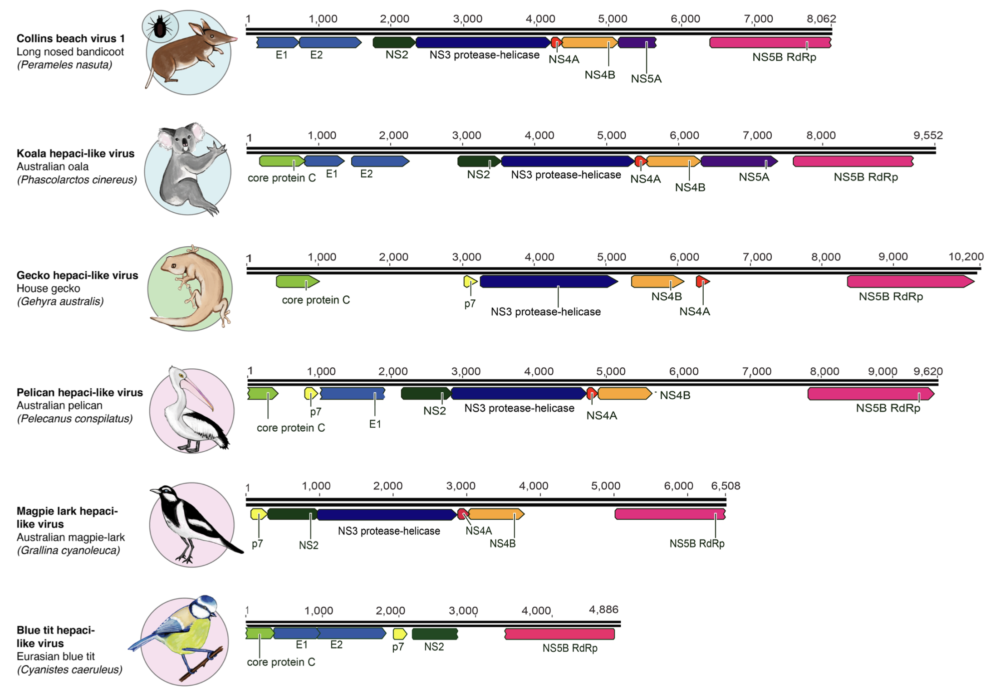

This page reports recent updates to the Flavivirid-GLUE project.
Please note: links to files on GitHub are mainly designed to indicate where these files are located within the repository. To investigate files (e.g. tree files) in the appropriate software context we recommend downloading the entire repository and browsing locally.
2021-12-28: Reference set updated - new pegi-hepaci species
Recent studies by Porter et al and Paraskevopoulou et al have reported a diverse range of novel flavivirid species. Sequences representing these newly described viruses - which include hepaciviruses, pegiviruses and 'large genome flaviviruses' - have been incorporated into Flavivirid-GLUE.

Above: a section of a schematic figure from Porter et al showing genome annotations for newly identified hepacivirus-like viruses. The newly described genomes include both partial and nearly complete genomes. Collins Beach virus was identified in ticks as well as bandicoots, but it is not clear if this reflects a vector role for ticks.
In addition, we have defined tentative, sub-genus level clades in the Pegivirus, Hepacivirus and Pestivirus genera based on phylogenetic analysis of these sequences. and created reference genome sequences for each of these clades.
We defined four subgroups of pestiviruses, three subgroups of pegiviruses, and nine subgroups of hepaciviruses.
Related Publications
Paraskevopoulou S, Käfer S, Zirkel F, Donath A, Petersen M, Liu S, Zhou X, Drosten C, Misof B, Junglen S.
(2021)
Viromics of extant insect orders unveil the evolution of the flavi-like superfamily.
Virus Evol. Mar 30;7(1)
[view]
Porter AF, Pettersson JH, Chang WS, Harvey E, Rose K, Shi M, Eden JS, Buchmann J, Moritz C, Holmes EC.
(2020)
Novel hepaci- and pegi-like viruses in native Australian wildlife and non-human primates.
Virus Evol. Aug 20;6(2)
[view]